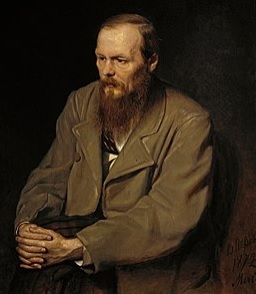

Достоевский Фёдор Михайлович

Дата рождения 30 октября (11 ноября) 1821
Место рождения
Москва, Российская империя[3]
Дата смерти 28 января (9 февраля) 1881 (59 лет)
Место смерти
Санкт-Петербург, Российская империя
Род деятельности
прозаик, переводчик, философ
Годы творчества 1844—1880
Направление реализм
Язык произведений русский
Фёдор Михайлович Достоевский (30 октября [11 ноября] 1821, Москва, Российская империя — 28 января [9 февраля] 1881, Санкт-Петербург, Российская империя) — русский писатель, мыслитель, философ и публицист[10]. Член-корреспондент Петербургской академии наук с 1877 года[11].
Ранние произведения писателя, как и повесть «Записки из Мёртвого дома», способствовали возникновению жанра психологической прозы[12].
После смерти Достоевский был признан классиком русской литературы и одним из лучших романистов мирового значения, считается первым представителем персонализма в России. Творчество русского писателя оказало воздействие на мировую литературу, в частности на творчество ряда лауреатов Нобелевской премии по литературе, философов Фридриха Ницше и Жана-Поль Сартра, а также на становление экзистенциализма и фрейдизма[13].
К наиболее значительным произведениям писателя относятся романы «великого пятикнижия». Романы «Преступление и наказание», «Идиот», «Бесы» и «Братья Карамазовы» включены в список 100 лучших книг Норвежского книжного клуба 2002 года. Многие известные произведения Достоевского многократно экранизировались и инсценировались в театре, ставились балетные и оперные постановки.
Род Достоевских берёт своё начало от боярина Данилы Ивановича Иртищева (Ртищева, Ртищевича, Иртищевича, Артищевича), которому 6 октября 1506 года было пожаловано имение «Достоев» в Поречской волости Пинского уезда, к северо-западу от Пинска[14]. Исследователи происхождения фамилии практически уверены, что все Достоевские являются потомками Данилы Иртищева[15]. Согласно местным легендам, название «Достоево» произошло от польского «dostoinik» — сановник, приближённый государя. «Достойниками» с некоторой насмешкой называли жителей селения, из которых набирали княжескую обслугу. Подразумевалось, что эти люди были «достойны» данной службы[16]. В Брестской области Белоруссии сохранилось село Достоево[17].
Отец — Михаил Андреевич
Мать — Мария Фёдоровна
Первым Достоевским, о котором имеются достоверные данные, является отец писателя, Михаил Андреевич Достоевский[26]. Согласно обнаруженным документам, Михаил Достоевский родился в 1789 году в селе Войтовцы[27], в 1802 году поступил в духовную семинарию при Шаргородском Николаевском монастыре[28]. В августе 1809 года Александр I издал указ об определении в Императорскую медико-хирургическую академию дополнительно 120 человек из духовных академий и семинарий[29]. Михаил Достоевский успешно сдал экзамены и 14 октября 1809 года вступил в число казённых воспитанников по медицинской части в московское отделение академии[30]. Во время Отечественной войны 1812 года студент 4-го класса Достоевский сначала был командирован «для пользования больных и раненых»[31], а позже боролся с эпидемией тифа[32]. 5 августа 1813 года был произведён лекарем 1 отделения в Бородинский пехотный полк[32], 5 августа 1816 года был удостоен звания штаб-лекаря[33].
В апреле 1818 года Михаил Достоевский был переведён ординатором в военный госпиталь в Москве[33], где вскоре через коллегу познакомился с Марией Нечаевой, дочерью купца 3-й гильдии Фёдора Тимофеевича Нечаева, происходившего из старых посадских города Боровска Калужской губернии[34]. Торговля Нечаева в суконном ряду процветала до нашествия Наполеона, после которого купец лишился практически всего своего состояния[35]. Старшая сестра Марии, Александра, бывшая замужем за богатым первостатейным купцом 1-й гильдии Александром Куманиным, впоследствии принимала участие в судьбе писателя[36].
14 января 1820 года Михаил Достоевский и Мария Нечаева обвенчались в церкви Московского военного госпиталя[37]. В конце 1820 года, после рождения первого сына Михаила, Достоевский уволился с военной службы и с 1821 года перешёл работать в Мариинскую больницу для бедных[38], несмотря на её скромные оклады, которые даже по официальным признаниям «не вознаграждают достаточно трудов их и не соответствуют необходимым надобностям каждого в содержании себя и своего семейства»[39]. Главным правилом данного заведения устанавливалось, что «бедность есть первое право» получить в ней помощь в любое время суток[40]. Переселяясь на Божедомку, Достоевские уже ожидали прибавление семейства к концу осени[41].
Фёдор Михайлович Достоевский родился 30 октября 1821 года в Москве на улице Новая Божедомка в правом флигеле Мариинской больницы для бедных Московского воспитательного дома. В «Книге для записи рождений…» церкви Петра и Павла при больнице осталась запись: «Родился младенец, в доме больницы бедных, у штаб-лекаря Михаила Андреича Достоевского, — сын Фёдор. Молитвовал священник Василий Ильин»[41][42]. Имя Фёдор было выбрано, по мнению биографов, по имени деда по матери — купца Фёдора Тимофеевича Нечаева[41][43]. 4 ноября Достоевский был крещён. Крёстными родителями стали штаб-лекарь надворный советник Григорий Павлович Маслович и княгиня Прасковья Трофимовна Козловская, дед Фёдор Тимофеевич Нечаев и Александра Фёдоровна Куманина[41][43].
«Я происходил из семейства русского и благочестивого. С тех пор как я себя помню, я помню любовь ко мне родителей…», — вспоминал спустя полвека Фёдор Михайлович[41]. В семье Достоевских строго соблюдались патриархальные обычаи[41]. Домашний порядок подчинялся службе отца. В шесть часов Михаил Достоевский просыпался, проводил утренний обход в больнице, объезжал пациентов по домам. После двенадцати был обед с семьёй, отдых и снова приём в больнице. «В 9 часов вечера, не раньше — не позже, накрывался обыкновенно ужинный стол и, поужинав, мы, мальчики, становились перед образом; прочитывали молитвы и, простившись с родителями, отходили ко сну. Подобное препровождение времени повторялось ежедневно», — вспоминал Фёдор Михайлович[44]. Самые ранние воспоминания писателя относятся к 1823—1824 годам. По свидетельству первого биографа Достоевского Ореста Фёдоровича Миллера, таким воспоминанием как раз стала молитва перед сном перед образами в гостиной при гостях[45][46]. После рождения в конце 1822 года сестры Варвары, няней в семье Достоевских становится Алёна Фроловна, о которой у будущего писателя остались самые лучшие воспоминания: «Всех она нас, детей, вырастила и выходила. Была она тогда лет сорока пяти, характера ясного, веселого и всегда нам рассказывала такие славные сказки!». В произведениях Достоевского няня упоминается в романе «Бесы»[47][43]. После рождения в марте 1825 года Андрея семья перебирается в левый флигель больницы. Новая квартира, по воспоминаниям Андрея, состояла из двух комнат, передней и кухни. Детской для старших детей служило «полутёмное помещение», отгороженная задняя часть передней[48][46].
Из воспоминаний Андрея, в детстве Достоевские слушали сказки про «Жар-птицу», «Алёшу Поповича», «Синюю бороду», сказки «Тысячи и одной ночи» и другие[49][50]. На Пасху смотрели Подновинские балаганы с «паяцами, клоунами, силачами, Петрушками и комедиантами». Летом устраивались семейные вечерние прогулки в Марьину рощу. По воскресеньям и праздникам Достоевские посещали обедни в больничной церкви, а летом мать с детьми ездила в Троице-Сергиеву лавру[51][52]. В детстве дом Достоевских посещали сестра матери Александра Куманина с мужем, дедушка Фёдор Тимофеевич Нечаев и его вторая жена Ольга Яковлевна, дядя Михаил Фёдорович Нечаев[53][54]. Друзьями дома в основном были сослуживцы отца и их семьи: эконом Мариинской больницы Фёдор Антонович Маркус, семьи старшего лекаря Кузьмы Алексеевича Щировского и ординатора больницы Аркадия Алексеевича Альфонского. Позже многие из них появляются в произведениях и упоминаются в неосуществлённых замыслах писателя[54]. Начало обучения. Имение Даровое